See It Clearly
Citrus & sage
Picture what you desire, down to the smallest detail.
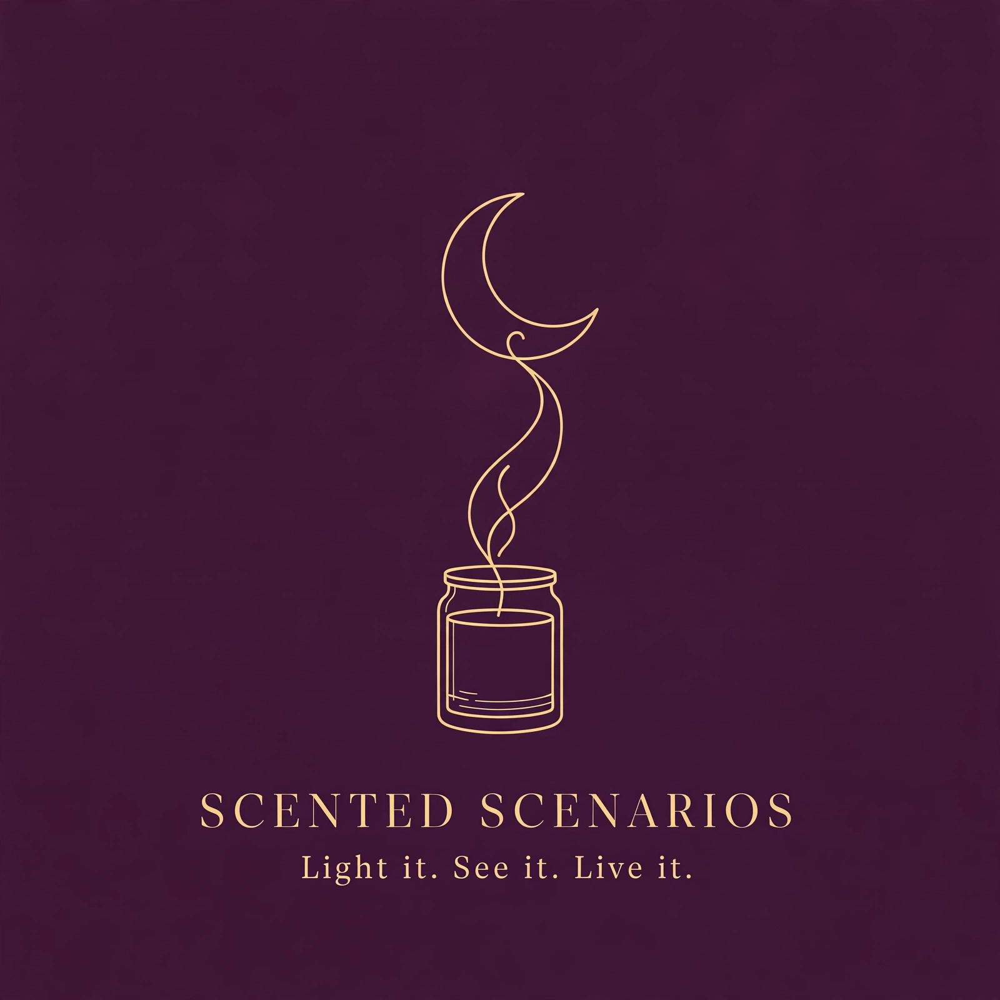
Light it. See it. Live it.
Handmade candles that help you see the life you desire — one quiet moment at a time.
At Scented Scenarios, we believe that what you can see clearly in your mind, you can bring into your life.
Each of our candles is hand-poured to be more than a fragrance. It is a quiet moment, a tool for meditation, and an invitation to picture the life you desire as if it is already real.
Light the candle. Breathe slowly. Close your eyes, and see it — the peace, the gratitude, the new beginning, the life within you. As the scent fills the room, let the picture fill your mind, and let your mind fill your day.
Every candle is made with care in Hobgood, North Carolina, and pairs beautifully with The Mechanics of the Mind — because the life you are picturing is already within you.
Each candle comes with a visualization card. Find the one that fits your moment:
Citrus & sage
Picture what you desire, down to the smallest detail.
Vanilla & amber
Feel it as if it is already yours.
Lavender & eucalyptus
Begin with thanks for what is already here.
Cedarwood & sandalwood
Release what no longer serves you.
Frankincense & myrrh
Remember the life already living in you.
Rosemary & mint
Wake up to a fresh start.
Light the candle. Breathe slowly. Read, close your eyes, and see it.
Twenty scents, hand-poured in wide 16 oz jars. Find the one that fits your moment.
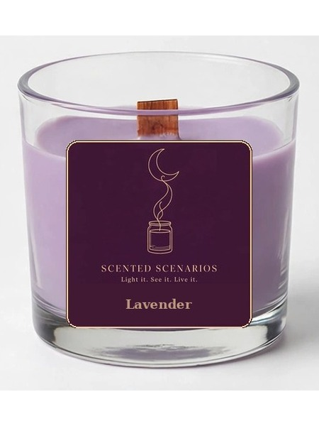
Soft, calming lavender that quiets the mind and settles the room. Light it when the day has been long and you need to slow down and breathe.
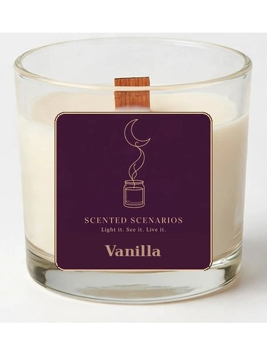
Warm, sweet vanilla like fresh-baked comfort. A cozy, familiar scent that makes any room feel like home.
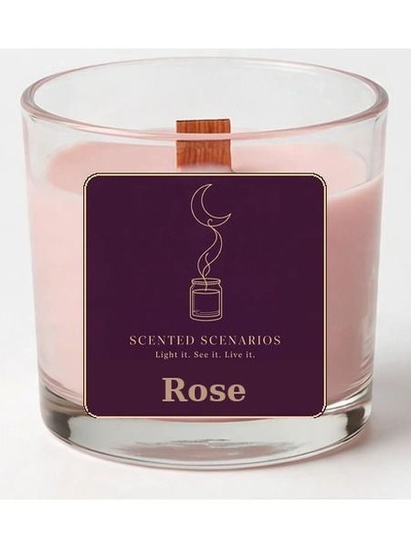
Classic rose, soft and romantic, with a gentle sweetness. Light it to bring a little beauty and tenderness into the moment.
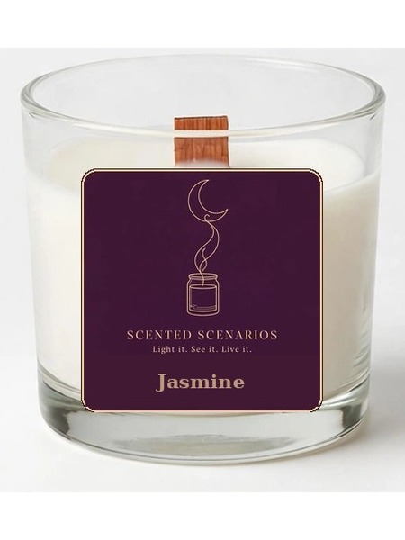
Delicate white jasmine, light and floral with a touch of sweetness. A peaceful scent for quiet evenings and clear thinking.
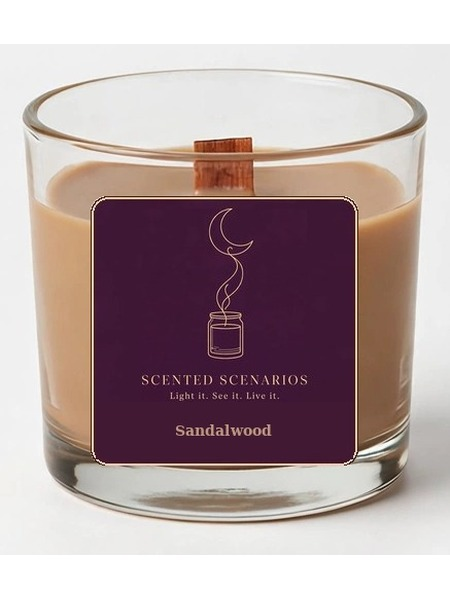
Warm, woody sandalwood with a smooth, grounding depth. Perfect for meditation, prayer, and stillness.
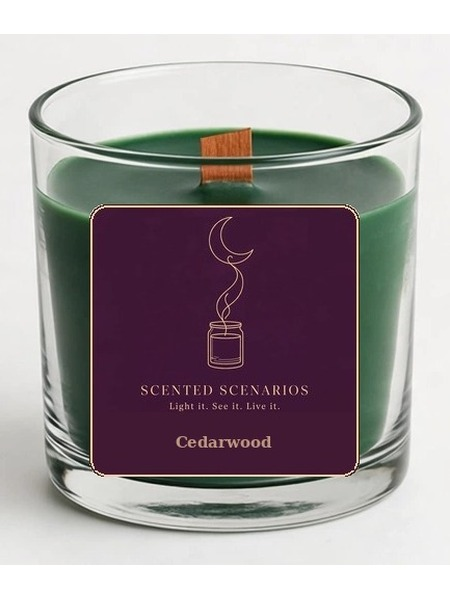
Rich cedarwood, like walking through a quiet forest. Steady and grounding, it brings the calm of the outdoors inside.
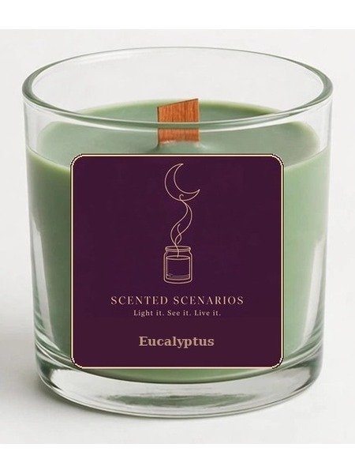
Cool, clean eucalyptus that clears the air and wakes up the senses. Light it when you need to breathe deep and feel refreshed.
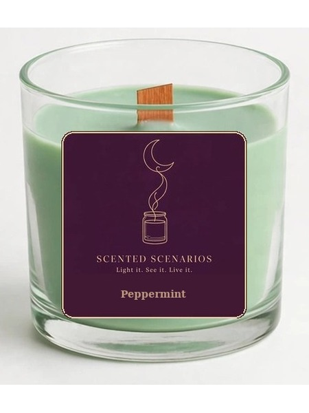
Bright, cool peppermint with a crisp, clean lift. Energizing and refreshing — a good scent for focus and fresh starts.
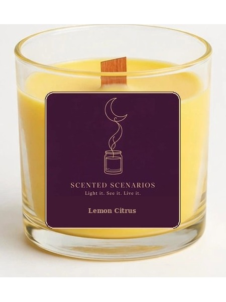
Sunny lemon citrus, bright and cheerful. A clean, happy scent that lifts the mood and freshens the whole room.
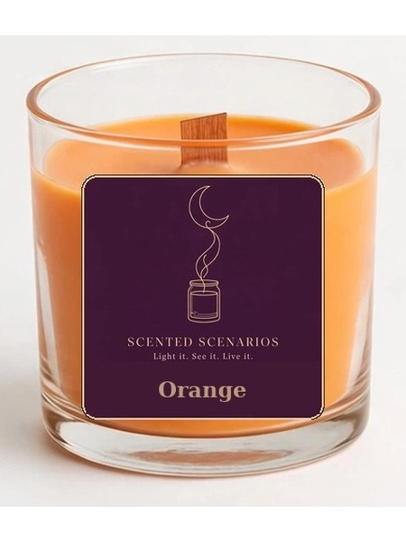
Sweet, juicy orange, warm and uplifting. Like sunshine in a jar — light it when you want the room to feel alive.
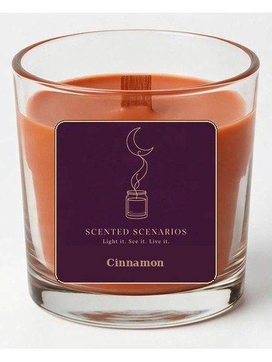
Warm, spicy cinnamon with a cozy, inviting glow. Perfect for cool evenings, quiet reading, and feeling at home.
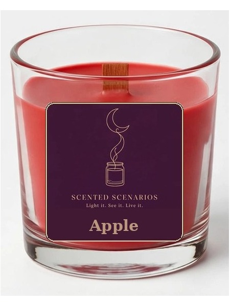
Crisp, sweet apple, fresh from the orchard. A cheerful, homey scent that fills the room with warmth.
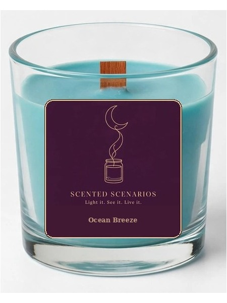
Fresh ocean breeze, clean and airy with a touch of salt air. Light it and picture the shore — calm water, open sky, easy breathing.
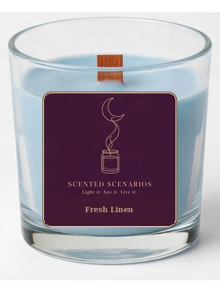
Clean, soft fresh linen, like sheets dried in the sun. A light, peaceful scent that makes the whole house feel fresh.
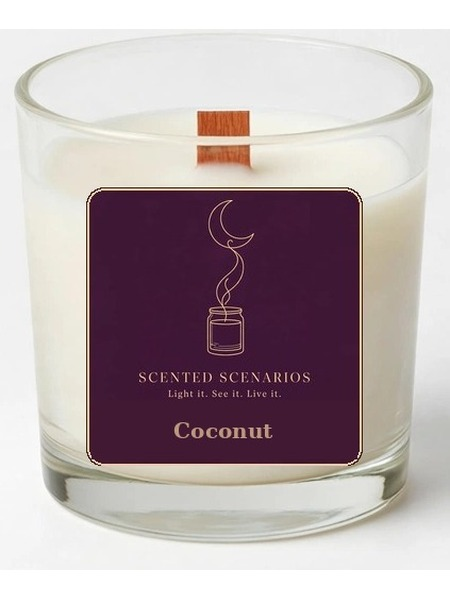
Creamy coconut, soft and tropical. Close your eyes and you're somewhere warm, slow, and easy — a little vacation in a jar.
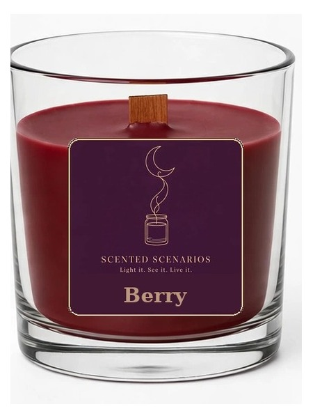
Sweet, juicy berry with a rich, fruity warmth. A bright, cheerful scent that makes the room feel full and alive.
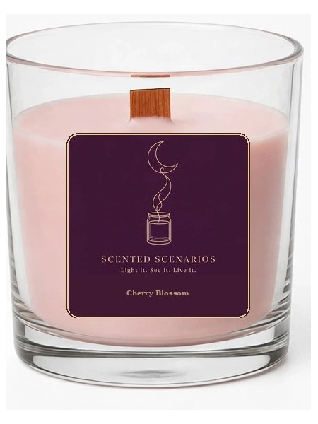
Delicate cherry blossom, light and softly sweet. A gentle, pretty scent for quiet mornings and fresh beginnings.
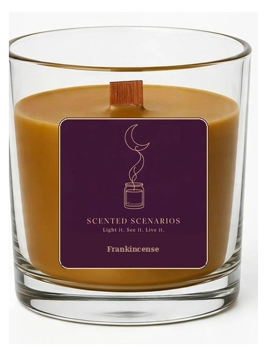
Deep, warm frankincense with a sacred, earthy richness. A timeless scent for prayer, meditation, and stillness.
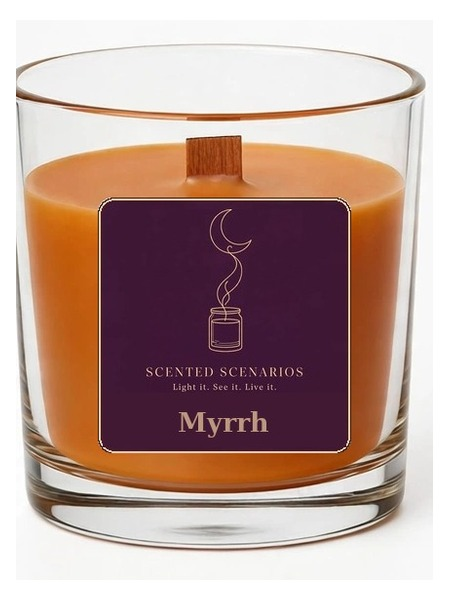
Warm, resinous myrrh, rich and grounding. An ancient, calming scent that brings depth and quiet to the room.
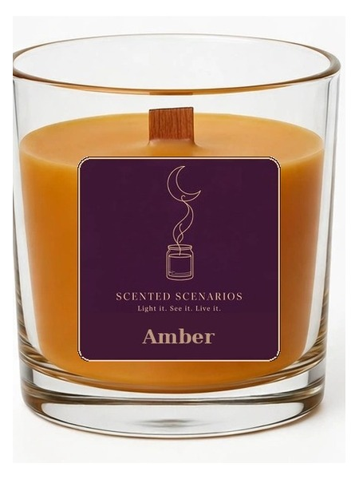
Golden amber, warm and smooth with a soft, honeyed glow. Cozy and comforting — a scent that wraps the room in warmth.
Rugged, outdoorsy scents in bold black glass — made for cabins, campfires, and quiet nights under the stars.
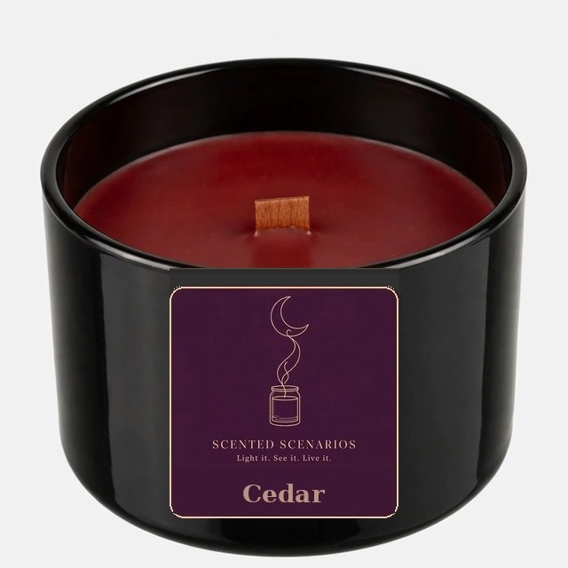
Deep, rugged cedar, like a cabin in the pines. Bold and woodsy — a scent that feels strong, steady, and close to nature.
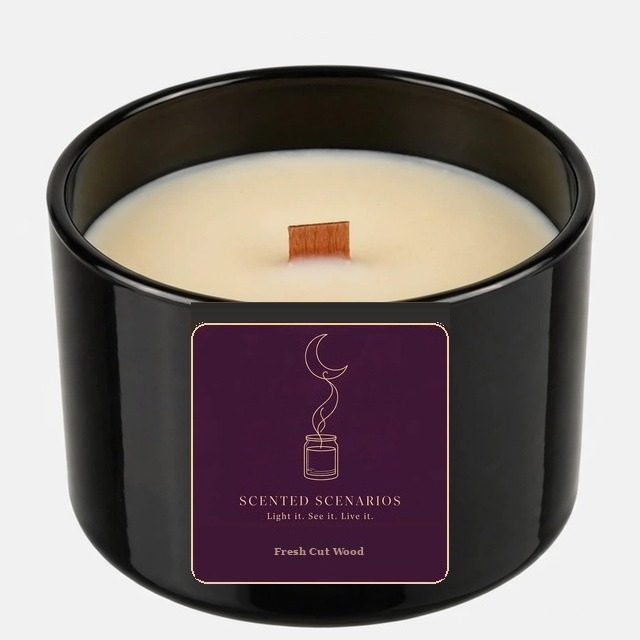
Clean, fresh-cut wood, like sawdust in the morning sun. Simple, honest, and outdoorsy — the smell of building something with your hands.
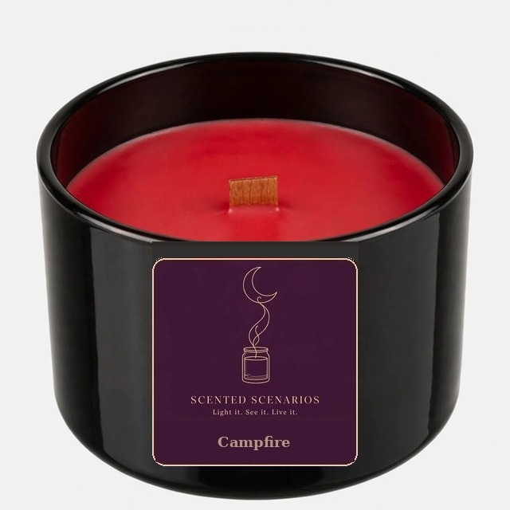
Smoky campfire, warm and crackling, like embers under the stars. Light it and you're right back at the fire, telling stories in the dark.
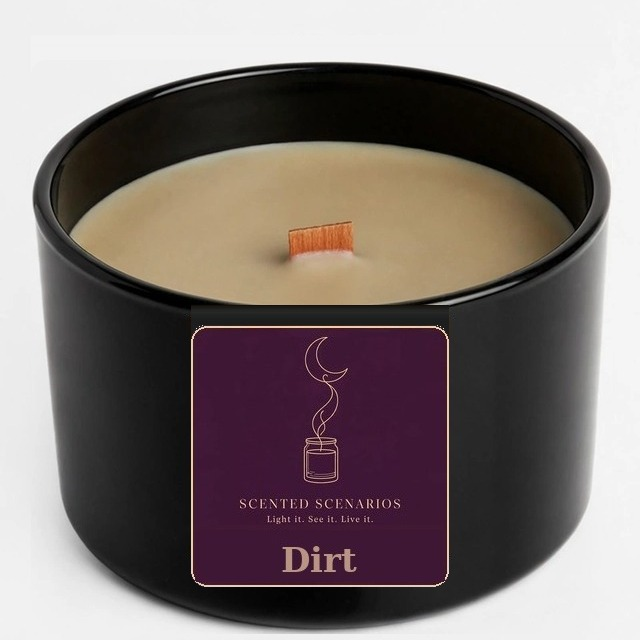
Earthy dirt, rich and grounding, like rain on a garden path. A scent that brings you back to the ground and keeps you steady.
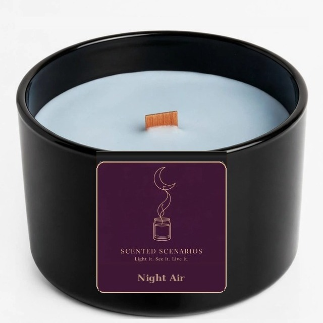
Cool night air, crisp and clean under an open sky. Light it when the day is done and you want the quiet of the evening to settle in.
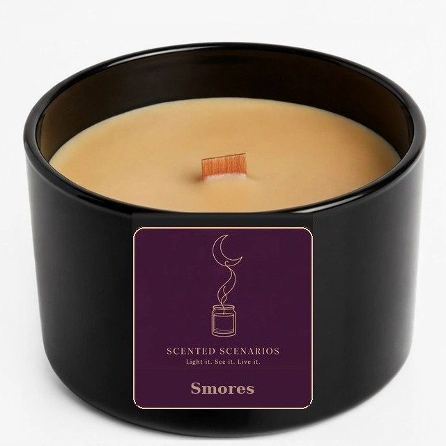
Sweet, toasty smores — melted marshmallow, chocolate, and graham cracker by the fire. Warm, playful, and impossible not to smile at.